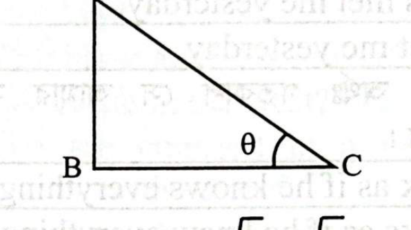
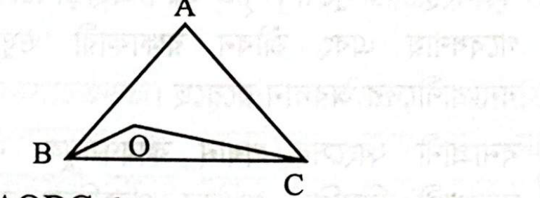

প্রশ্ন ১
বিষয়: বাংলা
প্রবন্ধ রচনা
পূর্ণমান: ২০
০১. 'বাংলাদেশের কৃষিতে বিজ্ঞান ও প্রযুক্তির প্রয়োগ' বিষয়ে একটি প্রবন্ধ লিখুন।
| বিষয় (Subject) | প্রধান বিষয়বস্তু (Topics Covered) | প্রশ্ন সংখ্যা | মোট মান |
|---|---|---|---|
| বাংলা ভাষা ও সাহিত্য | প্রবন্ধ ('কৃষিতে বিজ্ঞান ও প্রযুক্তি'), ভাব-সম্প্রসারণ ('দুর্জন বিদ্বান হইলেও পরিত্যাজ্য'), বঙ্গানুবাদ, ৫টি ষত্ব বিধানের নিয়ম, ৫টি বানান শুদ্ধি, সমাসের প্রয়োজনীয়তা, ৫টি বাক্য সংকোচন, ৫টি বাগধারা অর্থসহ বাক্য | ৪টি (০১–০৪) | ৬৫ |
| ইংরেজি ভাষা ও রচনা | Essay ('Tourism'), Relief Application to DC, Reading Comprehension (Science & Society), 10 Sentence Corrections, Simple Sentence Synthesis, 10 Sentence Transformations, 5 Appropriate Prepositions | ৭টি (০৫–১১) | ৭৫ |
| গণিত ও জ্যামিতি | ঘড়ির শতকরা লাভ-ক্ষতি, বর্গ ইঞ্চি ও সেমি পরিমাপ, অসমতা ও Interval, সমান্তর ধারা ও লগারিদম, ত্রিকোণমিতি উন্নতি কোণ (চিত্রসহ), সরল মুনাফা, ঘনবস্তুর আয়তন, ত্রিভুজের কোণদ্বিখণ্ডক উপপাদ্য প্রমাণ (চিত্রসহ) | ৫টি (১২–১৬) | ২৫ |
| সাধারণ জ্ঞান (বাংলাদেশ ও আন্তর্জাতিক) | বাংলা একাডেমি, ৬ দফা, জাতীয় সংসদ, কাজী নজরুল, পুঁজিবাজার (BSEC), বঙ্গভঙ্গ রদ, পদ্মা সেতু, ভারত মৈত্রী চুক্তি, বাল্টিক সাগর, নিকটতম গ্রহ, আজারবাইজান রাজধানী, শাহনামা, বুরকিনা ফাসো, টি-২০ বিশ্বকাপ ২০২২, সুয়েজ খাল, পানামা খাল, ওডেসা বন্দর | ১৭টি (১৭–৩৩) | ৩৫ |
| সর্বমোট: | ৩৩টি | ২০০ নম্বর | |
পিএসসি সাইফার কর্মকর্তা ২০২৩ লিখিত পরীক্ষার বিশদ সমাধান থেকে সংকলিত গুরুত্বপূর্ণ ব্যাকরণিক নিয়ম, গণিত সূত্র ও আন্তর্জাতিক তথ্যকোষ। হস্তলিপি ফন্ট: আবু সাঈদ।
| বিধি | নিয়ম ও বিশ্লেষণ | প্রামাণ্য উদাহরণ |
|---|---|---|
| ১. ঋ ও ঋ-কার | তৎসম শব্দে 'ঋ' বা 'ঋ-কার'-এর ঠিক পর সর্বদা মূর্ধন্য-ষ হয়। | ঋষি, বৃষ্টি, কৃষ্টি, দৃষ্টি |
| ২. রেফ (র) | তৎসম শব্দে রেফের পর মূর্ধন্য-ষ ব্যবহৃত হয়। | বর্ষা, আকর্ষণ, বিমর্ষ, ঈর্ষা |
| ৩. ট-বর্গীয় ধ্বনি | ট ও ঠ-এর সাথে যুক্ত ব্যঞ্জন সর্বদা মূর্ধন্য-ষ হয়। | কষ্ট, নষ্ট, সৃষ্টি, কাষ্ঠ, ওষ্ঠ |
| ৪. বিসর্গজাত সন্ধি | ই/উ কারান্ত উপসর্গের পর বিসর্গ থাকলে ক, খ, প, ফ-এর পূর্বে ষ হয়। | আবিষ্কার, নিষ্ফল, দুষ্কর |
| ৫. সম্ভাষণসূচক | বহুবচনে সম্ভাষণসূচক পদের অন্তে এ-কার থাকলে মূর্ধন্য-ষ হয়। | সুজনেষু, কল্যাণীয়াসু, প্রিয়বরেষু |
১. অন্তঃকোণ সমদ্বিখণ্ডক উপপাদ্য: \(\Delta ABC\)-এ \(\angle B\) ও \(\angle C\)-এর সমদ্বিখণ্ডকদ্বয় \(O\) বিন্দুতে মিলিত হলে কোণটির মান হবে: \(\angle BOC = ৯০^\circ + \frac{১}{২}\angle A\)। (বহিঃকোণ সমদ্বিখণ্ডক হলে: \(\angle BOC = ৯০^\circ - \frac{১}{২}\angle A\))।
২. ছায়া ও উন্নতি কোণ: ত্রিকোণমিতিক উচ্চতা ও দূরত্বে \(\tan \theta = \frac{\text{লম্ব (উচ্চতা)}}{\text{ভূমি (ছায়ার দৈর্ঘ্য)}}\)। উচ্চতা \(১৫ \text{ মি}\) এবং ছায়া \(৫\sqrt{৩} \text{ মি}\) হলে \(\tan \theta = \sqrt{৩} \Rightarrow \theta = ৬০^\circ\)।
৩. অসমতার ব্যাপ্তি (Intervals): \(x \ge a\) হলে সমাধান ব্যবধি \([a, \infty)\); \(x > a\) হলে \((a, \infty)\); \(x \le a\) হলে \((-\infty, a]\)।
| জলপথ | অবস্থান দেশ | সংযুক্ত জলরাশি | উন্মুক্ত সাল ও জাতীয়করণ |
|---|---|---|---|
| সুয়েজ খাল (Suez Canal) | মিসর (Egypt) | ভূমধ্যসাগর ও লোহিত সাগর | ১৮৬৯ সালে উন্মুক্ত; ১৯৫৬ সালে মিসর কর্তৃক জাতীয়করণ। |
| পানামা খাল (Panama Canal) | পানামা (Panama) | আটলান্টিক ও প্রশান্ত মহাসাগর | ১৯১৪ সালে উন্মুক্ত; ১৯৯৯ সালে পানামার নিকট হস্তান্তর। |
| জিব্রাল্টার প্রণালি | মরক্কো ও স্পেন | আটলান্টিক মহাসাগর ও ভূমধ্যসাগর | ইউরোপ ও আফ্রিকা মহাদেশকে পৃথক করেছে। |
১. বাংলা একাডেমি: ৩ ডিসেম্বর ১৯৫৫ তারিখে বর্ধমান হাউসে প্রতিষ্ঠিত হয় (প্রতিষ্ঠাতা সচিব মুহম্মদ এনামুল হক)।
২. ঐতিহাসিক ৬ দফা: ৫-৬ ফেব্রুয়ারি ১৯৬৬ লাহোরে পেশ করা হয়; বাঙালির মুক্তির সনদ / ম্যাগনা কার্টা নামে খ্যাত।
৩. জাতীয় সংসদ: সংবিধানের অনুচ্ছেদ ৬৫ অনুযায়ী ৩৫০ আসন বিশিষ্ট এক কক্ষবিশিষ্ট (Unicameral) আইনসভা।
৪. জাতীয় কবি নজরুল: ২৪ মে ১৯৭২ তারিখে ভারত থেকে ঢাকায় আনা হয় এবং ১৯৭৬ সালে বাংলাদেশের নাগরিকত্ব ও একুশে পদক প্রদান করা হয়।
স্ব-মূল্যায়ন ও টাইমার সহ পূর্ণাঙ্গ লিখিত সমাধান ইঞ্জিন
০১. 'বাংলাদেশের কৃষিতে বিজ্ঞান ও প্রযুক্তির প্রয়োগ' বিষয়ে একটি প্রবন্ধ লিখুন।
০২. প্রবাদ বাক্যের সম্প্রসারিত ভাব লিখুনঃ দুর্জন বিদ্বান হইলেও পরিত্যাজ্য।
০৩. বাংলায় অনুবাদ করুনঃ
০৪. প্রদত্ত ব্যাকরণিক প্রশ্নসমূহের উত্তর দিনঃ
(a) ষত্ব বিধানের পাঁচটি নিয়ম লিখুন।
(b) বানান শুদ্ধ করে লিখুনঃ শান্তনা, আকাংখা, মনিষী, উচ্ছাস, স্বরস্বতী।
(c) বাংলা ভাষায় সমাসের প্রয়োজনীয়তা লিখুন।
(d) বাক্য সংকোচন করুনঃ পাখির ডাক, আকাশে উড়ে যা, ফুল হতে জাত, একই গুরুর শিষ্য, অক্ষির সম্মুখে বর্তমান।
(e) অর্থসহ বাক্য গঠন করুনঃ হাতির খোরাক, অমৃতে অরুচি, উনপঞ্চাশ বায়ু, কাঁঠালের আমসত্ত্ব, রাবণের চিতা।
05. Write an essay on 'Tourism'.
[Hints: Introduction - Prospect of tourism in Bangladesh - Places of scenic beauty - Dhaka: its own attractions - Places of historical interest - Local people - The Porjoton Corporation of Bangladesh - Challenges of Tourism - Conclusion]
06. Write an application to the Deputy Commissioner of your District seeking relief for the cyclone 'Sitrang' - Affecting people of your area.
07. Read the following passage and answer the questions below:
Questions:
a) Which pervade every aspect of our time?
b) What explosion has science generated around us?
c) What has man in his power?
d) How is life in the west?
e) Who are engaged in a never ending struggle with nature?
08. Correct the following sentences:
a) He is not weak in Bangla but in English.
b) He distracted me but said, “I'm sorry to disturb you.”
c) You will find it in the last two pages.
d) I saw him to read a book.
e) We must speak with the concerned authority.
f) He has met me yesterday.
g) He talk as if he knows everything.
h) See the word in the dictionary.
i) I know what is he.
j) All are lost, nothing is left.
09. Combine the following sentences into one simple sentence:
I saw a man. He was one-eyed. He was old. He was sitting under a tree. The tree was shadowy.
10. Change the following sentences as directed:
a) He has not yet finished the work. (Affirmative)
b) Why do you prefer reading to writing? (Positive degree)
c) Something is done and it can not be undone. (Complex)
d) He was involved in dacoity and he confessed it. (Simple)
e) He was elected chairman. (Active)
f) I did not know him before. (Passive)
g) What is lotted cannot be blotted. (Compound)
h) We must help him. (Negative)
i) Her performance is better than yours. (Positive)
j) No student dislikes him. (Interrogative)
11. Fill in the gaps with appropriate prepositions:
a) He takes ____ his old mother.
b) Smoking tells ____ health.
c) He is popular ____ the people.
d) He died ____ cancer.
e) Do not lean ____ the wall.
১২. একটি ঘড়ি ১০% ক্ষতিতে বিক্রয় করা হলো। ঘড়িটি আরো ৩০ টাকা বেশি মূল্যে বিক্রয় করলে ৫% লাভ হত। ঘড়িটির ক্রয়মূল্য নির্ণয় করুন।
১৩. (a) ১ বর্গ ইঞ্চি সমান কত বর্গ সেন্টিমিটার?
(b) \(7x + 1 \ge 2x - 9\) অসমতাটি সমাধান করুন এবং সমাধানটি Interval (ব্যাপ্তি) আকারে লিখুন।
১৪. (a) \(\log 2 + \log 4 + \log 8 + \dots\) সমান্তর ধারাটির সাধারণ অন্তর নির্ণয় করুন।
(b) ১৫ মিটার উচ্চ দালানের ছায়ার দৈর্ঘ্য \(৫\sqrt{৩}\) মিটার হলে সূর্যের উন্নতি কোণ কত?

১৫. (a) বার্ষিক ৬% মুনাফায় কত বছরে ৮,০০০ টাকার মুনাফা ২,৪০০ টাকা হবে?
(b) একটি বাক্সের দৈর্ঘ্য ২ মিটার, প্রস্থ ১ মিটার ৫০ সেন্টিমিটার এবং উচ্চতা ১ মিটার। বাক্সটির আয়তন কত ঘনমিটার?
১৬. \(\Delta ABC\) এর \(\angle B\) এবং \(\angle C\) এর সমদ্বিখণ্ডকদ্বয় \(O\) বিন্দুতে মিলিত হলে, প্রমাণ করুন, \(\angle BOC = 90^\circ + \frac{1}{2}\angle A\)

১৭. বাংলা একাডেমি প্রতিষ্ঠা করা হয় কোন তারিখে?
১৮. ঐতিহাসিক ৬ দফা দাবী কোন তারিখে পেশ করা হয়?
১৯. বাংলাদেশের জাতীয় সংসদ কত কক্ষ বিশিষ্ট?
২০. বাংলাদেশের জাতীয় কবি কাজী নজরুল ইসলামকে কোন সালে ঢাকায় নিয়ে আসা হয়েছিল?
২১. বাংলাদেশে পুঁজিবাজারের নিয়ন্ত্রক সংস্থার নাম কি?
২২. বঙ্গভঙ্গ রদ হয় কত সালে?
২৩. পদ্মা সেতুর নির্মাণ কাজ শুরু হয় কত তারিখে?
২৪. স্বাধীনতা লাভের পর বাংলাদেশ প্রথম মৈত্রী চুক্তি কোন দেশের সাথে সম্পাদন করে?
২৫. বাল্টিক সাগর তীরবর্তী দুটি দেশের নাম লিখুন।
২৬. পৃথিবীর নিকটতম গ্রহের নাম কি?
২৭. আজারবাইজানের রাজধানীর নাম কি?
২৮. মহাকাব্য 'শাহনামা'র রচয়িতা কে?
২৯. বুরকিনা ফাসো দেশটি কোন মহাদেশের অন্তর্গত?
৩০. কোন দেশ টি-২০ বিশ্বকাপ-২০২২ এর আয়োজক?
৩১. সুয়েজ খাল কোন দেশের অন্তর্গত?
৩২. পানামা খাল কোন দুই মহাসাগরকে সংযুক্ত করেছে?
৩৩. ওডেসা কোন দেশের সমুদ্র বন্দর?